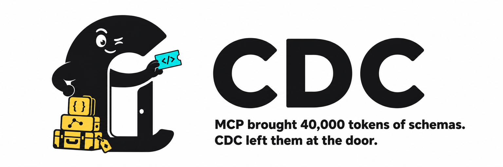

Turn fat MCP servers into ~900-token Agent Skills for Claude Code & Codex.
You keep the tools. The model stops swallowing the menu.
A fat MCP server dumps its entire tool schema into the model's context every turn — tens of thousands of tokens for a one-tool job. CDC converts that server into a short Agent Skill: a tiny preamble plus a one-line-per-tool reference the agent greps only when it needs it.
Same capabilities. The agent writes a short script or one gh/REST call instead of loading a menu it will never finish reading.
The 40,000-token pile of tool definitions never enters the window. That's the baggage left at the door.
Every MCP request gets a cost check first — even when you literally say “use MCP github.”
The router compares the native MCP schema tax against the CDC skill+bridge tax and takes the cheaper path at equal accuracy. Tiny surfaces stay native; fat schemas get sent to a skill. You don't choose — it measures.
| Router knob | Default | Meaning |
|---|---|---|
| schema tokens | ≥ 3,500 | prefer CDC |
| tool count | ≥ 40 | prefer CDC |
| MCP / skill ratio | ≥ 1.8× | prefer CDC |
First conversion of a fat MCP prints a one-time cost line; every session after is cheaper.
One live A/B on gpt-5.6-sol (medium reasoning, Codex CLI): read the LICENSE and go.mod of cli/cli, once through the normal GitHub MCP server, once through the github-cdc skill the router picked. Both arms answered correctly.
gpt-5.6-sol · reasoning medium · 10 real MCPs, 45 score keys — MCP-connected vs CDC skill.
| Target (full accuracy both) | MCP | CDC | under |
|---|---|---|---|
| everything | 18,500 | 8,624 | −53% |
| calc | 17,410 | 8,230 | −53% |
| github | 19,228 | 9,749 | −49% |
| fetch | 15,931 | 9,017 | −43% |
| memory | 17,609 | 12,805 | −27% |
Directional, not statistically settled — token counts vary run to run. The live A/B above is n=1; the suite is a single sweep. Numbers reproduce with the harness in implementer/.
Needs Node 18+ on your PATH. Restart Claude Code / Codex after install.
git clone https://github.com/nassimkhatiba-ai/cdc.git && cd cdc
node bin/cdc.js install-pluginSkills → ~/.claude/skills + ~/.codex/skills. Always-on via Claude hooks + ~/.codex/AGENTS.md.
claude plugin marketplace add nassimkhatiba-ai/cdc
claude plugin install cdc@cdc› Convert my GitHub MCP into a CDC skill
› Use the github MCP # still cost-checks first